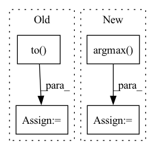

Pattern ID :24717

Before Change
if i >= 10: break
frames = frames.to(DEVICE) // [1, T, 3, h, w]
frames_vis = postprocess_img(frames.squeeze(dim=0)) // [T, 3, h, w]
input = frames[:, :VIDEO_IN_LENGTH] // [1, t, 3, h, w]
pred_rgb = pred_rgb_model.pred_n(input, pred_length=VIDEO_PRED_LENGTH) // [1, T, 3, h, w]
pred_rgb_vis = postprocess_img(pred_rgb) // [T, 3, h, w]
pred_rgb = torch.cat([input, pred_rgb], dim=1)
pred_rgb = torch.stack([seg_model(pred_rgb[:, i]) for i in range(pred_rgb.shape[1])], dim=1)
pred_rgb = pred_rgb.argmax(dim=2).squeeze() // [T, h, w]
pred_then_colorized_vis = colorize_semseg(postprocess_mask(pred_rgb), num_classes=SYNPICK_CLASSES) // [T, 3, h, w]
frames_seg = [seg_model(frames[:, i]).argmax(dim=1) for i in range(frames.shape[1])]
frames_seg = torch.stack(frames_seg, dim=1) // [1, 1, h, w]
input_seg = frames_seg[:, :VIDEO_IN_LENGTH] // [1, t, 1, h, w]
pred_mask = pred_mask_model.pred_n(input_seg, pred_length=VIDEO_PRED_LENGTH)
After Change
pred_rgb = pred_rgb.argmax(dim=2).squeeze() // [T, h, w]
pred_then_colorized_vis = colorize_semseg(postprocess_mask(pred_rgb), num_classes=SYNPICK_CLASSES).transpose(0, 3, 1, 2) // [T, 3, h, w]
frames_seg = torch.stack([seg_model(frames[:, i]) for i in range(frames.shape[1])], dim=1).argmax(dim=2) // [1, T, 1, h, w]
frames_seg_in = torch.stack([(frames_seg == i) for i in range(SYNPICK_CLASSES)], dim=2).float() // [1, T, c, h, w] one-hot float
input_seg = frames_seg_in[:, :VIDEO_IN_LENGTH] // [1, t, c, h, w]
pred_mask = pred_mask_model.pred_n(input_seg, pred_length=VIDEO_PRED_LENGTH).argmax(dim=2) // [1, n, 1, h, w]
pred_mask = torch.cat([input_seg.argmax(dim=2), pred_mask], dim=1).squeeze() // [T, h, w]
In pattern: SUPERPATTERN
Frequency: 3
Non-data size: 4
Instances
Fragment ID: 76575360
Project Name: ais-bonn/vp-suite
Commit Name: 13016d4ab8ba4f8e7ee087155a6c5171f4d00ba3
Time: 2021-08-02
Author: boltres@ais.uni-bonn.de
File Name: scripts/visualize_4_way.py
M Class Name: AnonimousClass
N Class Name: AnonimousClass
M Method Name: visualize_4_way(1)
N Method Name: visualize_4_way(1)
M Parent Class:
N Parent Class:
M File Name: scripts/visualize_4_way.py
N File Name: scripts/visualize_4_way.py
M Start Line: 16
M End Line: 73
N Start Line: 17
N End Line: 74
'>
Before Change
metrics = {"test_correct": 0, "test_loss": 0, "test_total": 0}
criterion = nn.CrossEntropyLoss().to(device)
with torch.no_grad():
for batch_idx, (x, target) in enumerate(test_data):
x = x.to(device)
After Change
loss = y_pred[0]
accuracy = y_pred[1]
correct = tf.equal(tf.argmax(y, 1), tf.cast(target, tf.int64))
// metrics["test_correct"] += tf.reduce_mean(tf.cast(correct, tf.float32))
metrics["test_loss"] += loss * target.size(0)
'>
Fragment ID: 76575347
Project Name: fedml-ai/fedml
Commit Name: 9e66b6521a89e76f568a18fc69f0e6cf7c3c6166
Time: 2022-08-14
Author: alex.gpt.llm@gmail.com
File Name: python/examples/cross_silo/tf-mqtt_s3_fedavg_mnist_lr_example/tf_model_trainer_classification.py
M Class Name: TfModelTrainerCLS
N Class Name: TfModelTrainerCLS
M Method Name: test(4)
N Method Name: test(4)
M Parent Class: ClientTrainer
N Parent Class: ClientTrainer
M File Name: python/examples/cross_silo/tf-mqtt_s3_fedavg_mnist_lr_example/tf_model_trainer_classification.py
N File Name: python/examples/cross_silo/tf-mqtt_s3_fedavg_mnist_lr_example/tf_model_trainer_classification.py
M Start Line: 68
M End Line: 90
N Start Line: 51
N End Line: 65
'>
Before Change
metrics = {"test_correct": 0, "test_loss": 0, "test_total": 0}
criterion = nn.CrossEntropyLoss().to(device)
with torch.no_grad():
for batch_idx, (x, target) in enumerate(test_data):
x = x.to(device)
After Change
loss = y_pred[0]
accuracy = y_pred[1]
correct = tf.equal(tf.argmax(y, 1), tf.cast(target, tf.int64))
// metrics["test_correct"] += tf.reduce_mean(tf.cast(correct, tf.float32))
metrics["test_loss"] += loss * target.size(0)
'>
Fragment ID: 76575359
Project Name: fedml-ai/fedml
Commit Name: 51350e5aa8f340f92f5a5ff1f2f88cd9ab1fe47f
Time: 2022-08-14
Author: alexliang.kh@gmail.com
File Name: python/examples/cross_silo/tf-mqtt_s3_fedavg_mnist_lr_example/tf_model_trainer_classification.py
M Class Name: TfModelTrainerCLS
N Class Name: TfModelTrainerCLS
M Method Name: test(4)
N Method Name: test(4)
M Parent Class: ClientTrainer
N Parent Class: ClientTrainer
M File Name: python/examples/cross_silo/tf-mqtt_s3_fedavg_mnist_lr_example/tf_model_trainer_classification.py
N File Name: python/examples/cross_silo/tf-mqtt_s3_fedavg_mnist_lr_example/tf_model_trainer_classification.py
M Start Line: 68
M End Line: 90
N Start Line: 51
N End Line: 65